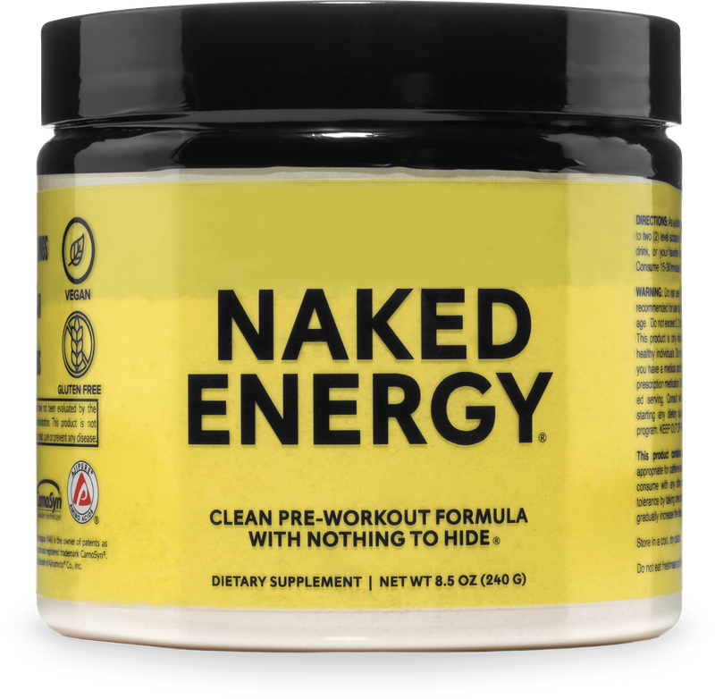

Product imagery supplied by the retailer. Packaging may vary — verify the Supplement Facts panel on the container you receive.
Naked Nutrition
Naked Energy
Our analysis — editorial take, not from the label
An NSF-certified, vegan pre-workout with a fully disclosed label — 200mg caffeine and 2g beta-alanine do most of the work, while the 1g each of creatine and arginine are token doses; note that every number is per 2-scoop serving.
- Caffeine
- 200 mg
- Citrulline
- —
- Beta-alanine
- 2 g per 2-scoop serving
- Servings
- 50
- Price tier
- Budget
Price tier: Budget · relative cost per full serving across this database
We don't list dollar prices — they change daily and go stale. Check the live price instead:
View current price Compare all 38 pre-workoutsAffiliate link — Scoop Sense may earn a commission at no additional cost to you.
Sold in three options — Unflavored, Fruit Punch, and Citrus — with the brand stating no artificial sweeteners, flavors, or colors in any version; the 50-serving count applies to the unflavored tub.
Label verified: July 2026 · View label source
Label data
Per full serving · 50 servings per container · from the manufacturer's panel
| Caffeine | 200 mg |
| CarnoSyn Beta-Alanine | 2 g per 2-scoop serving |
| Creatine Monohydrate | 1 g per 2-scoop serving |
| L-Arginine (as AjiPure) | 1 g per 2-scoop serving |
| Proprietary blend | No |
Primary label source: Naked Nutrition — Naked Energy (official product page) · verified July 2026
Product details
What is Naked Nutrition Naked Energy?
An NSF-certified, vegan pre-workout with a fully disclosed label — 200mg caffeine and 2g beta-alanine do most of the work, while the 1g each of creatine and arginine are token doses; note that every number is per 2-scoop serving. It sits in the moderate stim tier of the Scoop Sense pre-workout database, which spans 0–400 mg of caffeine per serving. Everything on this page comes from the manufacturer's supplement facts panel as of July 2026 — never from the marketing page.
Key ingredients & studied doses
- CarnoSyn Beta-Alanine · 2 g per 2-scoop serving. Within the 2-6g range used in beta-alanine endurance studies; may produce a temporary tingling sensation at this dose.
- Creatine Monohydrate · 1 g per 2-scoop serving. Well below the standard 3-5g daily creatine dose used in strength research — more of a token addition than a loading or maintenance amount.
- L-Arginine (as AjiPure) · 1 g per 2-scoop serving. Arginine has lower oral bioavailability than citrulline for raising blood arginine levels; 1g is modest next to the multi-gram amounts used in blood-flow research.
- Natural Caffeine (from unroasted coffee beans) · 200 mg per 2-scoop serving. Roughly two cups of coffee worth of stimulant, fully disclosed as a standalone ingredient rather than folded into a blend.
Cautions
- The serving size is 2 scoops, not 1 — every dose here, including the 200mg caffeine (about two cups of coffee), assumes the full two-scoop serving; a single scoop delivers half of each amount.
- 2g beta-alanine may cause a temporary tingling or flushing sensation.
- Creatine (1g) and arginine (1g) are both well below typical standalone dosing, so this shouldn't replace a dedicated creatine or pump product.
Flavors & sweetener
Sold in three options — Unflavored, Fruit Punch, and Citrus — with the brand stating no artificial sweeteners, flavors, or colors in any version; the 50-serving count applies to the unflavored tub.
Who it's best for
Most regular gym-goers — the caffeine dose is in the range of about two cups of coffee. Derived from the label figures above — not medical advice.
How we log this label
Every entry is built the same way: we read the current supplement facts panel, log each disclosed dose, compare it against the amounts used in published research, flag proprietary blends, and state the cautions plainly. The full methodology explains each step.
Common questions about Naked Nutrition Naked Energy
How much caffeine is in Naked Nutrition Naked Energy?
200 mg per full labeled serving — roughly 2.1 small cups of coffee. Within the Scoop Sense pre-workout database (0–400 mg per serving) that places it in the moderate stim tier. The FDA cites about 400 mg per day as an amount generally not associated with negative effects in healthy adults, and coffee, tea, and energy drinks count toward the same total.
Why does Naked Nutrition Naked Energy make my skin tingle?
The 2 g per 2-scoop serving of beta-alanine. The prickling (paresthesia) in the face, neck, and hands is generally considered harmless, is dose-dependent, and fades on its own — typically within about an hour. Most beta-alanine studies use 3.2 g per day.
Does Naked Nutrition Naked Energy disclose every dose?
Yes — the label lists an individual amount for each ingredient, with no proprietary blends. That is what the "label fully disclosed" tag on Scoop Sense means, and it is what lets each dose be compared against the amounts used in published research.
Do the numbers for Naked Nutrition Naked Energy assume one scoop or two?
All figures on this page are per full labeled serving. The serving size is 2 scoops, not 1 — every dose here, including the 200mg caffeine (about two cups of coffee), assumes the full two-scoop serving; a single scoop delivers half of each amount..
Reviews
Scoop Sense doesn't collect user reviews, and we won't invent them. Our editorial read: An NSF-certified, vegan pre-workout with a fully disclosed label — 200mg caffeine and 2g beta-alanine do most of the work, while the 1g each of creatine and arginine are token doses; note that every number is per 2-scoop serving.
Read customer reviews on AmazonAffiliate link — Scoop Sense may earn a commission at no additional cost to you.